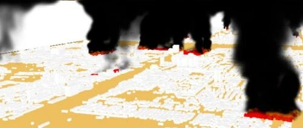

综述论文：城市密集建筑区新型地震次生灾害研究进展

00
摘要
随着经济和城镇化的发展，我国出现了大量的城市密集建筑群，包含了大量的密集高层建筑、人口和财物，是城市防震减灾工作的重要对象和新挑战。随着地震工程研究和应用的迅速发展，建筑倒塌等传统震害逐渐减少，而坠物、地震次生火灾等新型地震灾害愈发突出。这些新型灾害破坏性大，缺少有效的减灾对策。基于此，本文面向地震次生坠物、地震次生火灾、震后电梯人员受困、地震场地-城市效应问题等四类典型新型地震次生灾害，总结了当前关于新型地震次生灾害的初步研究成果并展望未来研究方向，以期为地震新型灾害研究提供参考。
01
引言
针对地震灾害，国内外已经开展了百余年的抗震研究，对建筑倒塌等典型震害取得了大量成果[1-9]。但是，一方面我国正在进行着人类历史上史无前例的大规模快速城镇化进程，大量新工程、新城区涌现。特别是我国出现了大量的城市密集建筑群，包含了大量的密集高层建筑、人口和财物，是城市防震减灾工作的重要对象和新挑战。另一方面，自唐山地震后，我国大城市已经有近50年未曾遭遇过强烈地震灾害，强震经验严重不足。上述两方面问题给当前城市的防震减灾带来了重大挑战。
美国前国防部长Donald Rumsfeld在总结冷战后美国的安全形势时，将对美国的威胁分为三个类别：
（1） Known Knowns，即知道问题在哪里，也知道解决方法；
（2） Known Unknowns，即知道问题在哪里，但不知道解决方法；
（3） Unknown Unknowns，即不知道问题在哪里，进而也无从解决。
对于我国现代化大城市而言，地震灾害同样需要考虑Known Knowns、Known Unknowns和Unknown Unknowns这三种不同类别的威胁：
（1） 对于地震引起的常规建筑破坏、倒塌等典型震害，国内外研究成果和工程实践经验已经非常丰富[10-15]，大多数属于Known Knowns，核心重在如何落实减灾措施。
（2） 与此同时，随着现代城市发展，涌现出很多新的地震灾害类型。这些新型地震灾害，或者已经在境外地震中出现，只是我国尚无先例；或者虽然未曾在实际地震中出现，但是根据已有的实验研究或者数值模拟，估计这些新型地震灾害会发生。但是，既有研究对这些新型地震灾害的研究还较为薄弱，尚未形成有效的减灾对策。这类问题就属于Known Unknowns，是近期迫切需要加强科学研究的领域。
（3） 还需要注意到，我国现代化城市人口数量之多、工程设施之密、经济社会环境之复杂，都是举世少有的，势必有一些新型地震灾害，还从未在国内外地震灾害或者科学研究中充分暴露或研究过。这类灾害就属于Unknown Unknowns，但是这些全新的地震灾害一旦出现，会给我们现阶段的防震减灾形势带来重大挑战，应对不当可能造成重大后果，因此需要城市管理者和地震研究者的进一步探索和研究。
本文将针对四类Known Unknowns类型的新型地震灾害，包括地震次生坠物、地震次生火灾、震后电梯人员受困、地震场地-城市效应等问题，介绍相关初步研究成果，以期更多国内外专家能共同参与到城市新型地震灾害的研究中来。
02
地震次生坠物研究
随着建筑抗倒塌能力研究的发展[16-19]，地震引发的建筑物倒塌风险已经不断降低。相反，建筑物外部非结构部件坠落引起的地震灾害已成为一个重大安全问题[20-21]。这些次生坠物不但导致人员伤亡，并致使道路堵塞，极大的影响震后救援[22]。鉴于此，地震次生坠物的研究逐渐得到国内外学者关注。但是，相对于结构抗震而言，外围护构件坠落的研究还相对较少。
外围护构件坠落的发生受到两方面因素的影响：（a） 结构层间变形（特别是围护构件的面内变形）可能引起围护构件开裂破坏，从而会极大削弱围护构件的强度、整体性以及和周围构件的连接，进而使得外围护构件形成坠物；（b） 地震或其他动力效应引起的加速度（特别是围护构件受到的面外加速度）可能会引起围护构件的破坏和脱落，从而形成坠物。
外围护构件坠落触发同时受到面内变形和面外加速度（惯性力）的影响，一些学者开展了针对性的试验研究，主要包括拟静力试验与振动台试验。其中，考虑面外惯性力影响的试验方法主要有图1所示三种[23-30]。Lu 等通过将填充墙体倾斜来模拟面外加速度，同时在面内施加水平力引起墙体的面内破坏，研究外围护构件的坠落触发机制，并给出了相应的计算方法[31]。Tian等开展了点支幕墙的面内破坏实验，确定了不同玻璃的破坏层间位移角[32]。

图1 填充墙试验加载方式
坠物碎片产生后，如何下落运动并在地面如何分布，是研究坠物灾害的另一个重要问题。地震下建筑物的坠物碎片在产生时具备一定的初速度。理想情况下，坠物的下落运动是一个平抛运动。此外，坠物落地后，和地面碰撞反弹，最后在地面的运动规律也十分复杂。
Xu等利用城市抗震弹塑性分析方法，得到了坠物发生楼层的楼面速度，接着按照平抛运动模型，得到了坠物落地的分布规律[33]。在此基础上，Lu等开展砌块抛掷试验，并对LS-DYNA软件中不同楼层高度、不同初始速度工况下的坠物分布模拟数据（图2）进行拟合，最终得到砌块坠物落地后的运动和分布规律，并开发了次生坠物分布模型[31]：

式中，Pd为所需计算区域（宽度为1 m）坠物分布密度，vb为某楼层砌块抛出时的初始速度（m/s），d为所需计算区域与建筑之间的距离（m），C1至C5为常数，各楼层取值不同。需要注意的是，在实际震害中，地面上各区域内的坠物可能来自建筑的各个楼层，当计算得到各楼层坠物对应的坠物密度后，采用线性叠加方式可以计算地面各区域最终的坠物分布密度。

图2 LS-DYNA填充墙坠物模拟[31]
震后人员安全疏散是减小地震伤亡的重要手段，而道路的坠物分布情况是影响人员疏散的一个关键因素。忽略非结构构件坠物会低估其对人员疏散的影响；而简单假设人员在有部分碎片覆盖的区域无法通行，则又会高估坠物的影响[34]。现有学者大多采用社会力模型和代理模型（Agent Based Model）进行城市环境室外疏散研究[35-37]，研究中主要考虑了建筑倒塌对道路的覆盖与人员行为的影响[38-40]。也有学者基于倾斜摄影通过机器学习方法识别坠物的分布，并考虑恐慌行为模拟人员疏散过程[41]。Lu等通过人员运动试验量化不同碎片分布情况对人员运动的影响，提出了坠物环境下的人员运动模型[31]：
行走情形：

跑步情形：

其中，R为速度折减系数；vp为人员的速度（m/s）；vp0为无坠物情形下人员的速度（m/s）；Pd为人员行经区域的障碍物占比。
在上述研究基础上，Lu等提出地震次生坠物情境人员疏散模拟方法（图3）。该方法主要包括：（1）区域建筑和道路基础数据库；（2）区域建筑非线性时程分析；（3）坠物分布计算；（4）疏散情境构建与模拟。并基于某校园教学区进行了案例研究。该案例中考虑了有无坠物以及多个PGA建立了三种疏散情境，其中情境1为无坠物情境，情境2与情境3在有坠物的基础上，其PGA分别为200 cm/s2与400 cm/s2。通过模拟得到不同情境下该教学区的坠物分布图，识别被坠物堵塞的道路及对人员运动的影响程度（图4）；此外，依据坠物分布结果与人员行进速度，得到了不同情境下的疏散时间（图5）[42]。结果表明：考虑坠物后人员疏散时间显著增加，且密集建筑区坠物覆盖面积较大，显著增加了人员疏散时所面临的风险。该方法可以为震后应急疏散、城市规划提供决策依据和技术支持。

图3 Lu等提出的地震次生坠物情境人员疏散框架[42]

图4 坠物分布示意图[42]

图5 平均疏散时间[42]
03
地震次生火灾研究
地震次生火灾是指由地震直接或间接引发的火灾。通过历史数据表明，地震次生火灾是造成人员伤亡最为严重的次生灾难之一[43]。鉴于此，地震次生火灾的研究受到国内外学者广泛重视。但是，城市密集建筑群的出现使得建筑间的次生火灾蔓延和建筑内部的次生火灾蔓延都变得格外复杂，既有模型尚难以满足要求。
建筑间次生火灾研究需要建立科学的起火模型和火灾蔓延模型。
（1） 起火模型
确定建筑起火位置与起火数量是起火模型的关键。因此国内外学者采用回归分析模型、事件树模型与概率模型得到地震后建筑起火概率[44-51]。Ren与Xie提出考虑建筑震害的建筑起火概率计算公式，并将起火概率最高的N个建筑设为起火建筑[52]。但对新型建筑和结构类型，仍然缺乏可靠的起火模型。
（2） 蔓延模型
针对火灾蔓延模型，由于地震次生火灾蔓延方式复杂，如火焰直接接触蔓延、热辐射蔓延、烟气羽流蔓延和远距离的飞火蔓延等，如何在模型中科学考虑这些物理机理是需要重点解决的问题。Hamada通过城市火灾蔓延的历史统计数据提出了基于经验的火灾蔓延模型，Lee与 Davidson提出了考虑室内火灾蔓延与建筑间蔓延的火灾蔓延物理模型[53-54]。同时，GIS 技术在火灾蔓延研究中得到成功应用，诸多学者基于元胞自动机等方法[55-60]模拟建筑次生火灾。由于地震次生火灾原理与普通火灾相同，使用FDS软件进行次生火灾模拟是一种常用方法[61-64]。Zeng等提出了一套基于物理模型的地震次生火灾蔓延模拟和烟气可视化方法，首先基于经验模型确定起火点位置和数量，然后考虑建筑震害，以及热辐射和热羽流机制，进行火灾水平蔓延过程的模拟。最后通过FDS软件构建整个城市尺度的次生火灾场景[65]，模拟结果见图6。

图6 Zeng等提出的基于物理模型的地震次生火灾蔓延模拟和烟气可视化方法[65]
但是，由于密集建筑群可能会形成复杂的局部风场小气候，此类精细化火灾蔓延仍有待进一步开展研究。
单体建筑地震次生火灾研究需要重点解决多灾害耦合问题。由于建筑震后火场存在非结构构件震害、地震次生火灾、次生坠物等多种灾害，多种灾害的耦合作用极大的影响建筑的可燃性，尤其是喷淋系统的破坏会大大削弱其对火灾的抑制能力，对地震次生火灾影响极大。而现代建筑由于日益复杂，其建筑抗火对喷淋设施的需求也特别强烈，一旦喷淋设施破坏，则火灾后果会加倍严峻。
因此，国内外学者针对消防喷淋管道展开系列研究[66-68]。Xu等考虑建筑中的喷淋系统，提出了结合建筑信息模型（BIM）、计算流体动力学（CFD）模型与FDS的建模方法，并与FEMA P-58结合，开发了一种预测喷淋系统部件地震破坏的概率方法，并评估其对地震次生火灾发展的影响[69]（图7）。

图7 Xu等提出的考虑喷淋系统破坏的
地震次生火灾模拟方法[69]
在上述研究基础上，Lu等考虑建筑震害、火灾蔓延和次生坠物等灾害的复杂耦合作用，提出了一套适用医院等重点建筑震后火灾救援场景模拟方法（图8），主要包括：（1）建筑BIM模型；（2）Unity建模；（3）构件震害评估；（4）次生火灾模拟；（5）VR场景建立。并以某19层医院为例进行了案例研究。具体而言，Lu等对该医院进行了地震响应时程分析，并考虑震后喷淋系统破坏情况、吊顶坠落情况等因素开展不同情境下建筑火灾模拟，其中情境1和情境2均为喷淋系统无震害，情境3为喷淋系统有震害。不同情境下的分析结果见图9与图10。研究结果表明，当考虑震后喷淋系统破坏与吊顶坠落时人员救援所需时间增加将近800%，危险系数增加3200%[42]。该模拟结果可为震后高真实感建筑火场环境的建立提供科学依据，为消防救援训练提供了技术支持。

图8 建筑震后火灾救援场景模拟框架[42]

图9 烟气蔓延情况[42]

图10 不同救援情境对比[42]
04
震后电梯人员受困研究
电梯在中、高层建筑中被广泛采用。历史震害数据表明，电梯的抗震能力较为薄弱，在地震过程中主体结构往往未发生严重破坏，但电梯却发生对重架脱轨、导轨支架变形等破坏，致使乘客被困从而威胁乘客人身安全。关于电梯震害，现有研究主要集中于单个电梯的抗震性能研究[70-76]。
由于震后电梯人员受困问题是一个受地震时刻电梯停靠位置的时空不确定性和乘客流量的时空特异性等多种因素交叉影响的复杂难题，这一方面的研究目前还较为有限。Gu等在城市抗震弹塑性分析方法[77]的基础上，提出了一种基于概率的城市尺度建筑群地震下电梯受困人数预测方法[78]，见图11。该方法通过蒙特卡洛模拟以考虑不同随机性的影响。该方法先通过抗震弹塑性分析方法获取结构响应，在此基础上，结合电梯所在位置、电梯易损性曲线预测电梯损伤状态，最后结合Gu等提出的建筑群电梯人流量时空数据估计方法预测城市尺度下电梯受困人员数量。Gu等以某校园为例介绍了该方法在实际工程中的应用效果（图12）。具体以三河-平谷地震作为目标地震情境，考虑地震动特征、结构的动力特性、建筑功能、电梯数量、电梯人流量等多种因素，对该校园电梯受困人员数量进行了评估，得到了不同地震强度、不同地震时段的电梯受困人员数量与分布[78]。上述方法和预测结果可为政府制定针对性地震应急救援预案提供参考。

图11 基于概率的电梯受困人员预测方法[78]

图12 DBE和MCE强度水平下建筑PTE数量分布[78]
05
地震场地-城市效应研究
对于建筑密集的城市区域，大量多层、高层建筑在空间上紧密分布。在地震作用下，结构与结构之间、结构与场地之间会产生强烈的相互作用，显著改变场地的动力学特征，这种城市建筑群与场地之间整体的相互作用一般被称为“场地－城市相互作用”，由此产生的影响被称为“场地－城市效应”（SCI效应）[79]。现有研究已经在“土结相互作用”与“土-结构-土相互作用”方面取得了丰富的研究成果[77,80-84]，而在区域尺度上考虑SCI效应的研究仍相对不足。
由于城市尺度建筑群数量多，难以通过试验进行大规模研究，而理论分析又受限于理想条件建设，因此相关研究以数值模拟为主[85-89]。Lu等提出了结合考虑 SCI效应的建筑群震害耦合数值方法（图 13），该方法基于非线性多自由度（MDOF）模型模拟地上建筑，采用开源谱元法程序SPEED模拟地震波在场地中的传播，通过耦合建筑底部与场地表面的边界条件实现场地－城市相互作用的模拟，并采用振动台试验验证了方法的可靠性[90]。Tian等以上海CBD为例开展了SCI效应分析，研究发现建筑群振动对周围环境产生的扰动幅值可以达到自由场地地面运动的30%以上，且高层建筑显著影响其周边较低建筑的地震安全，影响范围可超过800米[91]（图14）。因此，在城市尺度开展地震安全评估时，应考虑建筑群与场地之间相互作用可能带来的不利影响。

图13 Lu等提出的SCI效应的耦合计算方法[90]

图14 建筑群在各点处产生的速度扰动水平分量（单位：mm/s）[91]
06
结论与展望
由于我国城市化进程规模和速度均史无前例，解决城市地震安全问题也变得极具挑战性。除了建筑破坏、倒塌等已熟知（即所谓Known Knowns）的地震灾害外，还会有很多新型地震灾害出现（即所谓Known Unknowns与Unknown Unknowns）。本文以四类已知其很可能发生，但尚严重缺乏足够研究的新型地震灾害为例，介绍了相关的研究工作情况，得到以下结论：
（1） 中国城市密集的高层建筑群可能造成严重的外围护构件坠物、电梯人员被困、SCI效应等新型地震灾害，会显著增加地震疏散时间，导致大量人员被困，显著增加建筑响应。现有研究初步得到了坠物等新型灾害对建筑响应与人员疏散的影响，但城市尺度下建筑间关系复杂，且地震引发的灾害链相互耦合。而目前相关研究尚刚刚起步，也缺乏行之有效的减灾措施，仍需进一步探讨灾害链作用下新型灾害的形成机理，结合物理引擎等技术实现更真实的灾害场景可视化，并基于VR等技术进行灾害链作用下的人员疏散等研究。
（2） 地震次生火灾虽然已经研究多年，但是现代建筑大量依靠喷淋的消防设施降低火灾风险。而地震后喷淋设施破坏会显著加剧火灾后果，而目前喷淋设施破坏对建筑抗火能力以及灾后疏散能力影响的研究还非常不足，仍需进一步考虑房间布局、喷淋系统与防火门等消防设施的破坏，建立更精确的火灾蔓延模型。
（3） 除了上述四类新型地震灾害外，还有很多新型地震灾害已经暴露但尚未得到足够的重视和研究，还有很多新型地震灾害我们还完全缺乏认识（即所谓Unknown Unknowns），应加强对此研究领域的探索，通过使用数字孪生、情景构建等研究方法，发现地震作用下城市可能面临的新风险。
参考文献：
[1] Cornell C A, Jalayer F, Hamburger R O,et al. Probabilistic Basis for 2000 SAC Federal Emergency Management Agency Steel Moment Frame Guidelines[J]. Journal of Structural Engineering-asce, 2002,128: 526-533.
[2] Rossetto T, Elnashai A S. A new analytical procedure for the derivation of displacement-based vulnerability curves for populations of RC structures[J]. Engineering Structures, 2005, 27: 397-409.
[3] Ellingwood B. Mitigating Risk from Abnormal Loads and Progressive Collapse[J]. Journal of Performance of Constructed Facilities, 2006, 20: 315-323.
[4] Zareian F, Krawinkler H. Assessment of probability of collapse and design for collapse safety[J]. Earthquake Engineering and Structural Dynamics, 2007,36（13）: 1901-1914
[5] Khandelwal K, El-Tawil S, Kunnath S K, et al. Macromodel-Based Simulation of Progressive Collapse: Steel Frame Structures[J]. Journal of Structural Engineering-asce, 2008,134: 1070-1078.
[6] Li Y, Lu X Z, Guan H, et al. An improved tie force method for progressive collapse resistance design of reinforced concrete frame structures[J]. Engineering Structures, 2011,33: 2931-2942.
[7] Brunesi E, Nascimbene R, Parisi F, et al. Progressive collapse fragility of reinforced concrete framed structures through incremental dynamic analysis[J]. Engineering Structures, 2015,104: 65-79.
[8] Brunesi E, Parisi F. Progressive collapse fragility models of European reinforced concrete framed buildings based on pushdown analysis[J]. Engineering Structures,2017, 152: 579-596.
[9] Bento R, Simões A G. Seismic Performance Assessment of Buildings[J]. Buildings.2021,11（10）,440
[10] Pearson C, Delatte N J. Ronan Point Apartment Tower Collapse and its Effect on Building Codes[J]. Journal of Performance of Constructed Facilities, 2005,19: 172-177.
[11] Yi W, He Q, Xiao Y, et al.Experimental Study on Progressive Collapse-Resistant Behavior of Reinforced Concrete Frame Structures[J]. Aci Structural Journal, 2008,105: 433-439.
[12] Izzuddin B A, Vlassis A G, Elghazouli A Y, et al. Progressive collapse of multi-storey buildings due to sudden column loss — Part I: Simplified assessment framework[J]. Engineering Structures, 2008,30: 1308-1318.
[13] Eads L A, Miranda E, Krawinkler H, et al. An efficient method for estimating the collapse risk of structures in seismic regions[J]. Earthquake Engineering and Structural Dynamics,2013, 42（1）: 25-41.
[14] Adam J M, Parisi F, Sagaseta J, et al. Research and practice on progressive collapse and robustness of building structures in the 21st century[J]. Engineering Structures,2018,173:122-149.
[15] Eren N A, Brunesi E, Nascimbene R. Influence of masonry infills on the progressive collapse resistance of reinforced concrete framed buildings[J]. Engineering Structures,2019,178: 375-394.
[16] Villaverde R. Methods to assess the seismic collapse capacity of building structures: state of the art[J]. Structural Engineering ASCE, 2007（133）:57-66.
[17] Lu X, Lu X Z, GuanH, et al. Collapse simulation of reinforced concrete high-rise building induced by extreme earthquakes[J]. Earthquake Engineering and Structural Dynamics, 2013a, （42）:705-723.
[18] Xu Z, Lu X Z, Guan H, et al. Progressive-collapse simulation and critical region identifi cation of a stone arch bridge[J]. Journal of Performance of Constructed Facilities ASCE, 2013, 27（1）:43-52.
[19] Li Y, Lu X Z, Guan H, et al. An energy-based assessment on dynamic amplification factor for linear static analysis in progressive collapse design of ductile RC frame structures[J]. Advances in Structural Engineering, 2014a,17:1217-1225.
[20] Ellidokuz H, Ucku R, Aydin UY, et al. Risk factors for death and injuries in earthquake: cross-sectional study from Afyon, Turkey[J]. Croatian Medical Journal, 2015,（46）:613-618
[21] Johnston D, Standring S, Ronan K, et al. The 2010/2011 Canterbury earthquakes: context and cause of injury[J]. Natural Hazards , 2014,73（2）:627-637
[22] Lu X Z, Yang Z B, Gian P C, et al. Pedestrian evacuation simulation under the scenario with earthquake-induced falling debris[J]. Safety Science, 2019, 114:61-67
[23] Calvig M, Bolognini D．Seismic response of reinforced concrete frames infilled with weakly reinforced masonry panels［J］. Journal of Earthquake Engineering，2001，5（2）: 153-185．
[24] Angel R，Abrams D P，Shapiro D，et al. Behavior of reinforced concrete frames with masonry infills ［R］.Urbana: University of Illinois Engineering Experiment Station. University of Illinois at Urbana-Champaign，1994
[25] Dawe J L，Seah C K. Out-of-plane resistance of concrete masonry infilled panels［J］．Canadian Journal of Civil Engineering，1989，16（6）: 854-864
[26] Tu Y H，Liu P M，Lin H P．Out-of-plane experimental response of strong masonry infills［C］. Structures Congress: New Horizons and Better Practices. Long Beach: ASCE，2007: 1-10．
[27] Tu Y H，Chuang T H，Liu P M，et al．Out-of-plane shaking table tests on unreinforced masonry panels in RC frames［J］. Engineering Structures，2010，32（12）: 3925-3935．
[28] Hak S，Morandi P，Magenes G．Out-of-plane experimental response of strong masonry infills［C］. European Conference on Earthquake Engineering and Seismology, 2014: 139-144．
[29] Dafnis A，Kolsch H，Reimerdes H，et al. Arching in masonry walls subjected to earthquake motions［J］. Journal of Structural Engineering, 2002, 128（2）: 153-159．
[30] Xie X X, Qu Z, Fu HR, et al. Effect of prior in-plane damage on the out-of-plane behavior of masonry infill walls[J]. Engineering Structures, 2021, 226, 111380.
[31] Lu X Z, Yang Z B, Chea C, et al. Experimental study on earthquake-induced falling debris of exterior infill walls and its impact to pedestrian evacuation[J]. International Journal of Disaster Risk Reduction, 2020, 43, 101372
[32] Tian Y, Yang Z B, Chen W, et al. Pseudo static experimental study on spider-supported glass curtain walls[J]. Glass Structures and Engineering, 2022, 7: 681-691
[33] Xu Z, Lu X Z, Guan H, Tian Y, et al. Simulation of earthquake-induced hazards of falling exterior non-structural components and its application to emergency shelter design[J]. Natural Hazards, 2016, 80（2）:935-950.
[34] Quagliarini E, Bernardini G, Wazinski C, et al. Urban scenarios modifications due to the earthquake: ruins formation criteria and interactions with pedestrians’ evacuation[J]. Bulletin of Earthquake Engineering, 2016,14（4）:1071-1101.
[35] Bernardini G, D’Orazio M, Quagliarini E. Towards a “behavioural design” approach for seismic risk reduction strategies of buildings and their environment[J]. Safety Science, 2016,（86）:273-294.
[36] Yu J, Zhang C R, Wen J H, et al. Integrating multi-agent evacuation simulation and multi-criteria evaluation for spatial allocation of urban emergency shelters[J]. International Journal of Geographical Information Science, 2018, 32（9）:1884-1910.
[37] Zlateski A, Lucesoli M, Bernardini G, et al. Integrating human behaviour and building vulnerability for the assessment and mitigation of seismic risk in historic centres: proposal of a holistic human-centred simulation-based approach[J]. International Journal of Disaster Risk Reduction, 2020,（43）:101392.
[38] D’Orazio M, Quagliarini E, Bernardini G, et al. EPES–Earthquake pedestrians׳ evacuation simulator: A tool for predicting earthquake pedestrians׳ evacuation in urban outdoor scenarios[J]. International Journal of Disaster Risk Reduction, 2014, 10:153-177.
[39] D’Orazio M, Spalazzi L, Quagliarini E, et al. Agent-based model for earthquake pedestrians’ evacuation in urban outdoor scenarios: Behavioural patterns definition and evacuation paths choice[J]. Safety Science,2014, 62:450-465.
[40] Osaragi T, Morisawa T, Oki T. Simulation model of evacuation behavior following a large-scale earthquake that takes into account various attributes of residents and transient occupants[C]. The 6th International Conference on Pedestrian and Evacuation Dynamics, Zurich, Swiss.2012
[41] De Iuliis M, Battegazzorre E, Domaneschi M, et al. Large scale simulation of pedestrian seismic evacuation including panic behavior[J]. Sustainable Cities and Society, 2023,94, 104527
[42] 杨哲飚. 城市多尺度地震灾害情境模拟及可视化[D].清华大学,2022
[43] Sathiparan N. Mesh Type Seismic Retrofitting for Masonry Structures: Critical Issues and Possible Strategies[J]. European Journal of Environmental and Civil Engineering, 2015, 19(9):1136-1154.
[44] Suzuki K, Matsubara Y. Causes and Progress of Fires Following the 1995 Southern Hyogo Prefecture Earthquake, in: Proceedings of Annual Meeting[J]. Japan Association for Fire Science and Engineering, 1998: 154–157
[45] Tomoaki N, Takeyoshi T, Akihiko H. An evaluation method for the urban post-earthquake fire risk considering multiple scenarios of fire spread and evacuation[J]. Fire Safety Journal,2012,54: 167-180
[46] Murata A, Iwami T, Hokugo A, et al. Mechanism of the outbreak of fire in the 1995 Hyogo-Ken Nambu Earthquake-In comparison with past earthquake fire cases[J]. Journal of Architecture and Planning (transactions of Aij), 2001, 66: 1–8.
[47] Zhao S, Xiong L Y, Ren A Z. Spatial-temporal, Stochastic simulation of fire, outbreaks following earthquake base on GIS[J]. Fire Safety. 2006,24（4）:313-339
[48] Zolfaghari M R, Peyghaleh E, Nasirzadeh G. Fire following earthquake, intrastructure ignition modeling[J]. Fire Safety. 2009, 27（1）: 45-79
[49] Davidson R A. Modeling postearthquake fire ignitions using generalized linear （mixed） models[J]. Journal of Infrastructure Systems, 2009（15）: 351–360
[50] Yildiz S S, Karaman H. 2013. Post-Earthquake Ignition Vulnerability Assessment of Küçükçekmece District[J]. Natural Hazards and Earth System Sciences Discussions, 2013, 1（3）：2005-2040.
[51] Anderson D, Davidson R A, Himoto K, et al. Statistical Modeling of Fire Occurrence Using Data From the Tōhoku[J]. Japan Earthquake and Tsunami. Risk Analysis, 2016,36（2）:183-430
[52] Ren A Z, Xie X Y. The Simulation of Post-Earthquake Fire-Prone Area Based On Gis[J]. Journal of Fire Sciences,2004, 22(5): 421-439.
[53] Lee S W, Davidson R A. Physics-Based Simulation Model of Post-Earthquake Fire Spread[J]. Journal of Earthquake Engineering, 2010a, 14（5）:670-687.
[54] Lee S W, Davidson R A. Application of a Physics-Based Simulation Model to Examine Post-Earthquake Fire Spread[J]. Journal of Earthquake Engineering, 2010b, 14（5）: 688-705
[55] Meng X J, Zhao J P. Cellular Automata Modeling of Fire Spread Based on Post-Earthquake Fire Risk Assessment of Urban Area[J]. Advanced Materials Research, 2011,（368-373）:732–738
[56] Zhao S J. Simulation of mass fire-spread in urban densely built areas based on irregular coarse Cellular automae[J].Fire Technology, 2011,47（3）:721-749
[57] Rafia M M, Aziz T, Lodi S H. A suggested model for mass fire spread[J]. Sustainable and Resilient Infrastructure. 2020, 5（4）: 214-231
[58] Thomas G, Heron D, Cousins J, et al. Modeling and Estimating Post-Earthquake Fire Spread[J]. Earthquake Spectra,2012, 28（2）:795-810.
[59] Cousins J, Thomas G, Heron D, et al. Probabilistic Modeling of Post-Earthquake Fire in Wellington, New Zealand[J]. Earthquake Spectra, 2012, 28（2）:553-571
[60] Himoto K, Mukaibo K, Akimoto Y, et al. A Physics-Based Model for Post-Earthquake Fire Spread Considering Damage to Building Components Caused by Seismic Motion and Heating by Fire[J]. Earthquake Spectra, 2013, 29（3）: 793-816.
[61] Hu L H, Fong N K, Yang L Z, et al. Modeling fire-induced smoke spread and carbon monoxide transportation in a long channel: fire dynamics simulator comparisons with measured data[J]. Journal of Hazardous Materials, 2007,140（1-2）:293-298
[62] Cha M, Han S, Lee J, et al. A virtual reality based fire training simulator integrated with fire dynamics data[J]. Fire Safety Journal, 2012（50）:12-24.
[63] Zalok E, Hadjisophocleous G V. Assessment of the use of fire dynamics simulator in performance-based design[J]. Fire Technology, 2011,47（4）:1081-1100.
[64] Šulc S, Šmilauer V, Patzák B, et al. Linked simulation for fire-exposed elements using CFD and thermo-mechanical models[J]. Advances in Engineering Software, 2019（131）:12-22.
[65] Lu X Z, Zeng X, Xu Z, et al. Physics-based Simulation and High-fidelity Visualization of Fire Following Earthquake Considering Building Seismic Damage[J]. Journal of Earthquake Engineering ,2019,23（7）: 1173-1193.
[66] Jeon J, Jung W, Ju B S. Evaluation of Seismic Performance of 2-Story Fire Protection Sprinkler Piping System[J]. Environmental Engineering Science,2014,10（3）: 458-464
[67] Kim J, Meacham B J, Park H, et al. Fire Performance of a Full-Scale Building Subjected to Earthquake Motions: Test Specimen, Seismic Motions and Performance of Fire Protection Systems[J]. Fire Safety Science, 2014,11: 732-745.
[68] Sekizawa A, Ebihara M, Notake H, Development of seismic-induced fire risk assessment method for a building[J]. Fire Safety Science. 2003（7）:309–320
[69] Xu Z, Zhang Z C, Lu X Z, et al. Post-earthquake fire simulation considering overall seismic damage of sprinkler systems based on BIM and FEMA P-58[J].Automation in Construction,2018,90:9-22
[70] Suarez L E，Singh M P． Seismic response of rail-counterweight systems of elevators［C］． Proceeding of the 11th World Conference on Earthquake Engineering, Acapulco，Mexico，1996．
[71] Suarez L E，Singh M P．Dynamics and response of rail-counterweight systems under strong seismic motions［C］．Proceedings of the 6th US National Conference on Earthquake Engineering, Seattle, Washington, 1998
[72] Porter, K. Fragility of hydraulic elevators for use in performance-based earthquake engineering[J]. Earthquake Spectra, 2007,23（2）:459-469.
[73] Porter, K. Seismic fragility of traction elevators[J]. Earthquake Engineering and Structural Dynamics, 2016,45（5）: 819-833.
[74] Wang, X, Hutchinson T C, Astroza R, et al. Shake table testing of an elevator system in a full-scale five-story building[J]. Earthquake Engineering and Structural Dynamics, 2017,46（3）:391-407.
[75] Singh M P，Suarezle L E，Rildova. Seismic response of rail-counterweight systems in elevators［J］. Earthquake Engineering and Structural Vibration，2002，31（2）：281-303.
[76] Singh M P，Rildova，Suarez L E. Non-linear seismic response of the rail-counterweight system in elevators in buildings［J］. Earthquake Engineering and Structural Dynamics，2004，33（2）：249-270.
[77] Lu X Z, Guan H. Earthquake Disaster Simulation of Civil Infrastructures: from Tall Buildings to Urban Areas （2nd Edition）[M]. Springer, Singapore.2021
[78] Gu D L, Wang Y X, Lu X Z,et al. Probability-Based City-Scale Risk Assessment of Passengers Trapped in Elevators under Earthquakes[J]. Sustainability ,2023, 15, 4829
[79] Bard P Y, Chazelas J L, Guéguen P, et al. Assessing and Managing Earthquake Risk: Geo-scientific and Engineering Knowledge for Earthquake Risk Mitigation: developments, tools, techniques[M]. springer, 2006
[80] Zhang B, Xiong F, Lu Y, et al. Regional seismic damage analysis considering soil‐structure cluster interaction using lumped parameter models：a case study of Sichuan University Wangjiang Campus buildings[J]. Bulletin of Earthquake Engineering,2021,19（11）: 4289-4310
[81] Boutin C, Soubestre J, Schwan L, et al. Multi‐scale modeling for dynamics of structure‐soil‐structure interactions[J]. Acta Geophysica, 2014, 62（5）: 1005-1024.
[82] Schwan L, Boutin C, Padrón L A, et al. Site‐city interaction：theoretical，numerical and experimental crossed‐analysis[J]. Geophysical Journal International, 2016, 205（2）: 1006-1031.
[83] Uenishi K. The town effect：dynamic interaction between a group of structures and waves in the ground[J]. Rock Mechanics and Rock Engineering, 2010, 43（6）: 811-819
[84] Clouteau D, Broc D, Devésa G, et al. Calculation methods of structure‐soil‐structure interaction（3SI）for embedded buildings：application to NUPEC tests[J]. Soil Dynamics and Earthquake Engineering, 2012,32（1）:129-142
[85] Sahar D, Narayan J P, Kumar N. Study of role of basin shape in the site‐city interaction effects on the ground motion characteristics［J］. Natural Hazards, 2015, 75（2）: 116-1186
[86] Sahar D, Narayan J P. Quantification of modification of ground motion due to urbanization in a 3D basin using viscoelastic finite‐difference mod‐ elling［J］. Natural Hazards, 2016, 81（2）: 779-806.
[87] Semblat J F, Kham M, Bard P Y. Seismic‐wave propagation in alluvial basins and influence of site‐city interaction［J］. Bulletin of the Seismolog‐ ical Society of America, 2008, 98（6）: 2665-2678.
[88] Semblat J F, Kham M，Guéguen P，et al. Site‐city interaction through modifications of site effects［C］. EERI. 7th US Conference on Earthquake Engineering，Boston，United States，2002
[89] Isbiliroglu Y, Taborda R, Bielak J. Coupled soil-structure interaction effects of building clusters during earthquakes[J]. Earthquake Spectra, 2015, 31（1）:463-500
[90] Lu X Z, Tian Y, Wang G, et al. A numerical coupling scheme for nonlinear time history analysis of buildings on a regional scale considering site‐city interaction effects[J]. Earthquake Engineering and Structural Dynamics,2018,47（13）:2708-2725.
[91] Tian Y, Chen S Y, Liu S M, et al. Influence of tall buildings on the city-scale seismic response analysis: A case study of Shanghai CBD[J]. Soil Dynamics and Earthquake Engineering.,2023, 173: 108063.
---End---
智能设计平台网站：
AIstructure2023：从智能设计云平台到AIstructure-Copilot
相关研究
学术报告视频
专著
人工智能与机器学习
---结构智能设计
---其他土木工程领域人工智能研究
城市灾害模拟与韧性城市
高性能结构与防倒塌
新论文：抗震&防连续倒塌：一种新型构造措施
长按识别二维码，关注我们的科研动态